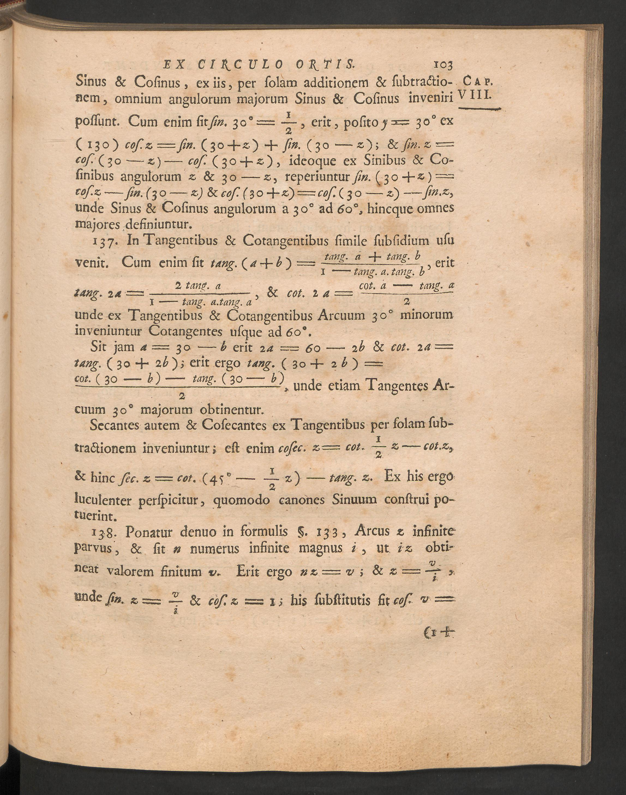
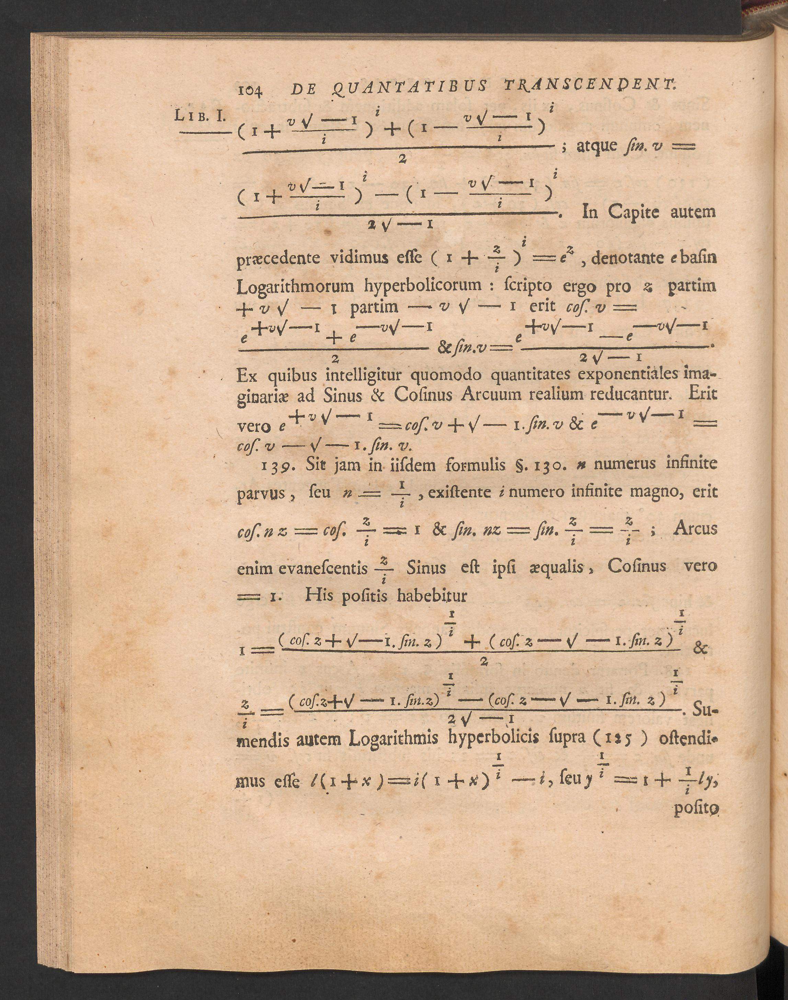

Matemática Abierta · MA-ART-0011 · MA-FE-04
El §138 de la Introductio
El facsímil se conserva como documento histórico. A su lado se ofrece una normalización únicamente matemática: no sustituye ni corrige silenciosamente la fuente.
Facsímil institucional · §138


Transcripción matemática normalizada
Euler escribe la unidad imaginaria como √−1, no como i. Manteniendo esa elección:
e+v√−1 = cos v + √−1 · sin v,
e−v√−1 = cos v − √−1 · sin v.
En notación contemporánea, poniendo \(i=\sqrt{-1}\):
eiv = cos v + i sin v,
e−iv = cos v − i sin v.
Control editorial. La segunda caja es una traducción notacional moderna. No debe presentarse como reproducción tipográfica de 1748.
Fuente: Leonhard Euler, Introductio in analysin infinitorum, vol. I, Lausanne, 1748, ETH-Bibliothek Zürich, Rar 5512, DOI 10.3931/e-rara-8740, Public Domain Mark. Los archivos locales corresponden a los canvases IIIF 2447306 y 2447307.